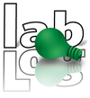

Some links to related resources:
| Jan Benda: relacs main developer. | |
| COMEDI: Linux control and measurement device interface, used by relacs for accessing data acquisition boards. | |
| RTAI: Real-time Linux, needed for the dynamic clamp. | |
| npi electronic GmbH: Single electrode clamp amplifiers (SEC), the hardware needed not only for the dynamic clamp. | |
|  | LabLog: Laboratory Logbook by Jan Grewe manages your data. |
| G-Node: German neuroinformatics node. | |
| incf: International neuroinformatics coordinating facility. | |
| RTXI - Real-Time eXperiment Interface: A real time Linux dynamic clamp program. |